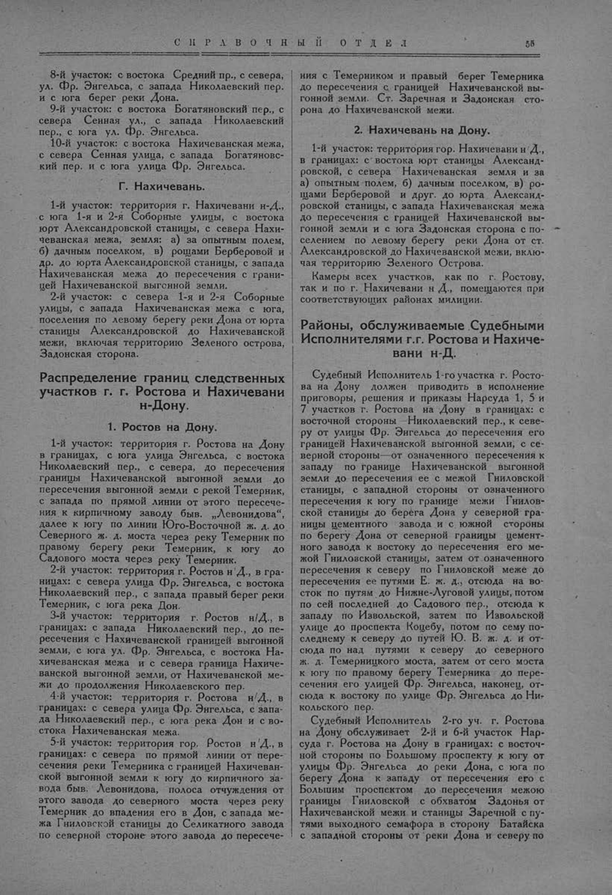

Лист источника 105
Скан

Распознанный текст
СПРАВОЧНЫЙ ОТДЕЛ 55
8-й участок: с востока Средний пр., с севера,
ул. Фр. Энгельса, с запада Николаевский пер.
и с юга берег реки Дона.
9-й участок: с востока Богатяновский пер., с
севера Сенная ул., с запада Николаевский
пер., с юга ул. Фр. Энгельса.
10-й участок: с востока Нахичеванская межа,
с севера Сенная улица, с запада Богатяновс-
кий пер. и с юга улица Фр. Энгельса.
Г. Нахичевань.
1-й участок: территория г. Нахичевани н-Д.,
с юга 1-я и 2-я Соборные улицы, с востока
юрт Александровской станицы, с севера Нахи-
чеванская межа, земля: а) за опытным полем,
б) дачным поселком, в) рощами Берберовой и
др. до юрта Александровской станицы, с запада
Нахичеванская межа до пересечения с грани-
цей Нахичеванской выгонной земли.
2-й участок: с севера 1-я и 2-я Соборные
улицы, с запада Нахичеванская межа с юга,
поселения по левому берегу реки Дона от юрта
станицы Александровской до Нахичеванской
межи, включая территорию Зеленого острова,
Задонская сторона.
Распределение границ следственных
участков г. г. Ростова и Нахичевани
н-Дону.
1. Ростов на Дону.
1-й участок: территория г. Ростова на Дону
в границах, с юга улица Энгельса, с востока
Николаевский пер., с севера, до пересечения
границы Нахичеванской выгонной земли до
пересечения выгонной земли с рекой Темерник,
с запада по прямой линии от этого пересече-
ния к кирпичному заводу быв. „Левонидова“,
далее к югу по линии Юго-Восточной ж. д. до
Северного ж. д. моста через реку Темерник по
правому берегу реки Темерник, к югу до
Садового моста через реку Темерник.
2-й участок: территория г. Ростов н/Д., в гра-
ницах: с севера улица Фр. Энгельса, с востока
Николаевский пер., с запада правый берег реки
Темерник, с юга река Дон.
3-й участок: территория г. Ростов н/Д., в
границах: с запада Николаевский пер., до пе-
ресечения с Нахичеванской границей выгонной
земли, с юга ул. Фр. Энгельса, с востока На-
хичеванская межа и с севера граница Нахиче-
ванской выгонной земли, от Нахичеванской ме-
жи до продолжения Николаевского пер.
4-й участок: территория г. Ростова н/Д., в
границах: с севера улица Фр. Энгельса, с запа-
да Николаевский пер., с юга река Дон и с во-
стока Нахичеванская межа.
5-й участок: территория гор. Ростов н/Д., в
границах: с севера по прямой линии от пере-
сечения реки Темерника с границей Нахичеван-
ской выгонной земли к югу до кирпичного за-
вода быв. Левонидова, полоса отчуждения от
этого завода до северного моста через реку
Темерник до впадения его в Дон, с запада ме-
жа Гниловской станицы до Селикатного завода
по северной стороне этого завода до пересече-
ния с Темерником и правый берег Темерника
до пересечения с границей Нахичеванской вы-
гонной земли. Ст. Заречная и Задонская сто-
рона до Нахичеванской межи.
2. Нахичевань на Дону.
1-й участок: территория гор. Нахичевани н/Д.,
в границах: с востока юрт станицы Александ-
ровской, с севера Нахичеванская земля и за
а) опытным полем, б) дачным поселком, в) ро-
щами Берберовой и друг. до юрта Александ-
ровской станицы, с запада Нахичеванская межа
до пересечения с границей Нахичеванской вы-
гонной земли и с юга Задонская сторона с по-
селением по левому берегу реки Дона от ст.
Александровской до Нахичеванской межи, вклю-
чая территорию Зеленого Острова.
Камеры всех участков, как по г. Ростову,
так и по г. Нахичевани н/Д., помещаются при
соответствующих районах милиции.
Районы, обслуживаемые Судебными
Исполнителями г.г. Ростова и Нахиче-
вани н-Д.
Судебный Исполнитель 1-го участка г. Росто-
ва на Дону должен приводить в исполнение
приговоры, решения и приказы Нарсуда 1, 5 и
7 участков г. Ростова на Дону в границах: с
восточной стороны Николаевский пер., к севе-
ру от улицы Фр. Энгельса до пересечения его
границей Нахичеванской выгонной земли, с се-
верной стороны—от означенного пересечения к
западу по границе Нахичеванской выгонной
земли до пересечения ее с межой Гниловской
станицы, с западной стороны от означенного
пересечения к югу по границе межи Гнилов-
ской станицы до берега Дона у северной гра-
ницы цементного завода и с южной стороны
по берегу Дона от северной границы цемент-
ного завода к востоку до пересечения его ме-
жой Гниловской станицы, затем от означенного
пересечения к северу по Гниловской меже до
пересечения ее путями Е. ж. д., отсюда на во-
сток по путям до Нижне-Луговой улицы, потом
по сей последней до Садового пер., отсюда к
западу по Извольской, затем по Извольской
улице до проспекта Коцебу, потом по сему по-
следнему к северу до путей Ю. В. ж. д. и от-
сюда по над путями к северу до северного
ж. д. Темерницкого моста, затем от сего моста
к югу по правому берегу Темерника до пере-
сечения его улицей Фр. Энгельса, наконец, от-
сюда к востоку по улице Фр. Энгельса до Ни-
кольского пер.
Судебный Исполнитель 2-го уч. г. Ростова
на Дону обслуживает 2-й и 6-й участок Нар-
суда г. Ростова на Дону в границах: с восточ-
ной стороны по Большому проспекту к югу от
улицы Фр. Энгельса до реки Дона, с юга по
берегу Дона к западу от пересечения его с
Большим проспектом до пересечения межою
границы Гниловской с обхватом Задонья от
Нахичеванской межи и станицы Заречной с пу-
тями выходного семафора в сторону Батайска
с западной стороны от реки Дона и северу по